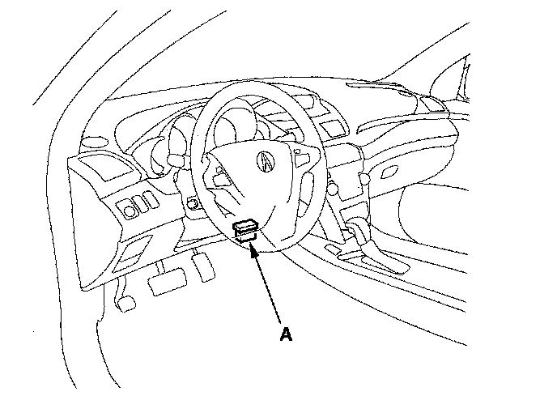

With Manufacturers Scan Tool
How to Clear DTCs1. With the ignition switch OFF, connect the HDS to the data link connector (DLC) (A) located under the dash on the driver's side of the dashboard.

2. Turn the ignition switch ON (II).
3. Make sure the HDS communicates with the vehicle and the TPMS control unit. If it doesn't, troubleshoot the DLC circuit.
4. Clear the DTC(s) by following the screen prompts on the HDS.
NOTE: See the HDS Help menu for specific instructions.
5. Turn the ignition switch OFF.